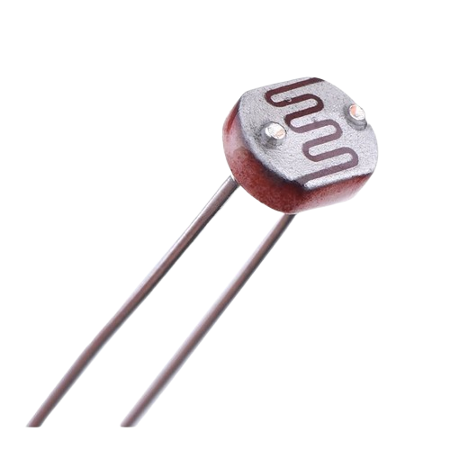
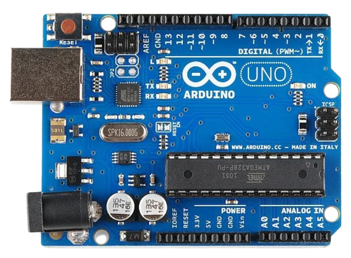

Seja bem-vindo à página do Projeto Integrador!
Nessa página, você encontrará o resultado e informações sobre o Projeto:
Resultado
O que é e como funciona o projeto?
O que é um LDR?
O que é um Arduino?
Membros
Resultado
Leitura ADC
--
Resistência
--
Iluminância
--
Variação ao longo do tempo
O que é e como funciona?
O projeto consiste no desenvolvimento de um sistema capaz de medir a intensidade luminosa de um ambiente utilizando um LDR GL5528 conectado a um Arduino Uno.
O LDR capta a luz do ambiente, variando a sua resistência elétrica conforme a luminosidade recebida. Usando um resistor de 100kΩ em série com o LDR, formamos um divisor de tensão. Essa tensão é enviada para uma entrada do Arduino, que, por sua vez, realiza a leitura dos valores elétricos.
Em alguns resultados teóricos, chegamos na seguinte tabela:
| Iluminação | Resistência do LDR | Tensão de saída |
|---|---|---|
| 10 lux | 14 kΩ | 4,39 V |
| 100 lux | 2,8 kΩ | 4,86 V |
| 1000 lux | 559 Ω | 4,97 V |
O que é um LDR?
O Light Dependent Resistor (LDR), também chamado de fotorresistor, é um componente eletrônico cuja resistência elétrica varia de acordo com a luminosidade incidente sobre sua superfície.
Quando exposto à alta iluminação, a resistência diminui. Em ambientes escuros, a resistência aumenta. Isso permite que o componente seja utilizado em sistemas de detecção e monitoramento de luz, como no projeto desenvolvido. Existem vários tipos de LDR, entretanto, o escolhido para este projeto foi o LDR GL5528.

Um LDR.
O que é um Arduino UNO?
O Arduino é uma plataforma de prototipagem eletrônica composta por placas programáveis que permitem desenvolver projetos envolvendo sensores, componentes eletrônicos e dispositivos externos.
Ele funciona executando instruções programadas pelo usuário, sendo capaz de receber informações de sensores, processar dados e controlar outros componentes.
Assim como o LDR, o Arduino também possui vários tipos. O escolhido para o projeto é o Arduino UNO.

Um Arduino UNO.
Membros:
Cayo Pardos Lastiri
Lyvia Bezerra de Melo
Pietro Pereira
Vinicius de Sena Alarcon
Como o resultado é calculado
1. Conversão da leitura analógica em tensão
Vout = leitura × 5,01023
Conecte o Arduino para ver um exemplo com valores reais.
2. Cálculo da resistência do LDR
RLDR = 100000 × 5,0 − VoutVout
3. Conversão da resistência em lux
Lux = 10log10(100000) − log10(RLDR)0,7